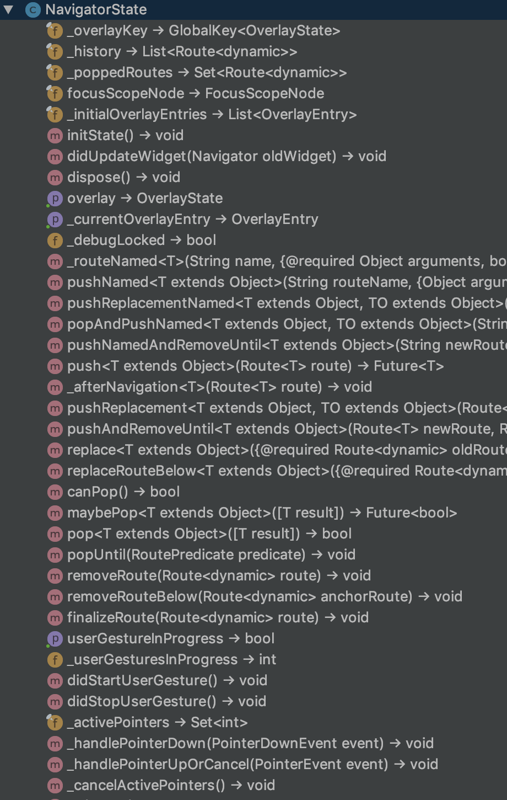
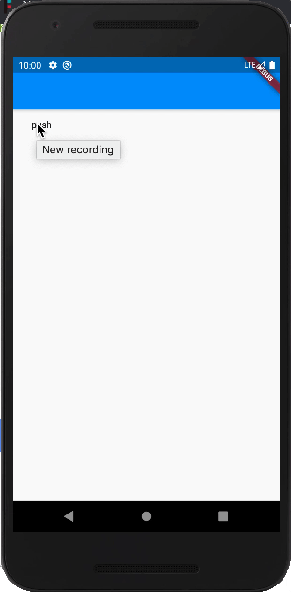

干掉context进行路由管理
看下我们上节课留的报错：
class MyApp extends StatelessWidget {
Widget build(BuildContext context) {
return new MaterialApp(
title: 'Flutter高级进阶',
home: new Scaffold(
appBar: new AppBar(),
body: new FlatButton(child: new Text("push"), onPressed: () => push(context)),
),
);
}
/*
* 路由跳转方法
* */
push(context) {
//导航到新路由
Navigator.push(
context,
MaterialPageRoute(
// MyHomePage不写参数则默认为1
builder: (context) => MyHomePage()),
);
}
}
报错信息：
I/flutter (21935): ══╡ EXCEPTION CAUGHT BY GESTURE ╞═══════════════════════════════════════════════════════════════════
I/flutter (21935): The following assertion was thrown while handling a gesture:
I/flutter (21935): Navigator operation requested with a context that does not include a Navigator.
I/flutter (21935): The context used to push or pop routes from the Navigator must be that of a widget that is a
I/flutter (21935): descendant of a Navigator widget.
I/flutter (21935):
I/flutter (21935): When the exception was thrown, this was the stack:
I/flutter (21935): #0 Navigator.of.<anonymous closure> (package:flutter/src/widgets/navigator.dart:1475:9)
I/flutter (21935): #1 Navigator.of (package:flutter/src/widgets/navigator.dart:1482:6)
I/flutter (21935): #2 Navigator.push (package:flutter/src/widgets/navigator.dart:1107:22)
I/flutter (21935): #3 MyApp.push (package:oc_project/main.dart:18:15)
I/flutter (21935): #4 MyApp.build.<anonymous closure> (package:oc_project/main.dart:12:72)
I/flutter (21935): #5 _InkResponseState._handleTap (package:flutter/src/material/ink_well.dart:654:14)
I/flutter (21935): #6 _InkResponseState.build.<anonymous closure> (package:flutter/src/material/ink_well.dart:729:32)
I/flutter (21935): #7 GestureRecognizer.invokeCallback (package:flutter/src/gestures/recognizer.dart:182:24)
I/flutter (21935): #8 TapGestureRecognizer._checkUp (package:flutter/src/gestures/tap.dart:365:11)
I/flutter (21935): #9 TapGestureRecognizer.handlePrimaryPointer (package:flutter/src/gestures/tap.dart:275:7)
I/flutter (21935): #10 PrimaryPointerGestureRecognizer.handleEvent (package:flutter/src/gestures/recognizer.dart:455:9)
I/flutter (21935): #11 PointerRouter._dispatch (package:flutter/src/gestures/pointer_router.dart:75:13)
I/flutter (21935): #12 PointerRouter.route (package:flutter/src/gestures/pointer_router.dart:102:11)
I/flutter (21935): #13 GestureBinding.handleEvent (package:flutter/src/gestures/binding.dart:218:19)
I/flutter (21935): #14 GestureBinding.dispatchEvent (package:flutter/src/gestures/binding.dart:198:22)
I/flutter (21935): #15 GestureBinding._handlePointerEvent (package:flutter/src/gestures/binding.dart:156:7)
I/flutter (21935): #16 GestureBinding._flushPointerEventQueue (package:flutter/src/gestures/binding.dart:102:7)
I/flutter (21935): #17 GestureBinding._handlePointerDataPacket (package:flutter/src/gestures/binding.dart:86:7)
I/flutter (21935): #21 _invoke1 (dart:ui/hooks.dart:263:10)
I/flutter (21935): #22 _dispatchPointerDataPacket (dart:ui/hooks.dart:172:5)
I/flutter (21935): (elided 3 frames from package dart:async)
I/flutter (21935):
I/flutter (21935): Handler: "onTap"
I/flutter (21935): Recognizer:
I/flutter (21935): TapGestureRecognizer#72729
难道我们只能把home抽出成一个类来解决这个问题吗？实际上还有另一个方法，就是我们这节要讲的干掉那个上下文(context)，
来进行路由管理；
分析：
上节我提到NavigatorKey是一个管理路由的Key，咋们解决方案也是用这个NavigatorKey；
灵感来源：
我去查看Navigator源码的时候突然发现一个NavigatorState类，而且是具备Navigator的所有功能；

开始上手
首先定义一个NavigatorKey，也就是GlobalKey全局Key，然后范型是NavigatorState：
final navGK = new GlobalKey<NavigatorState>();
然后在MaterialApp设置这个Key为navigatorKey的值：
class MyApp extends StatelessWidget {
Widget build(BuildContext context) {
return new MaterialApp(
title: 'Flutter高级进阶',
navigatorKey: navGK,// 设置navigatorKey
home: new Scaffold(
appBar: new AppBar(),
body: new FlatButton(child: new Text("push"), onPressed: () => push(),
),
),
);
}
}
然后使用这个Key来跳转即可：
push() {
//导航到新路由
navGK.currentState.push(
MaterialPageRoute(
// MyHomePage不写参数则默认为1
builder: (context) => MyHomePage()),
);
}
效果图：

这样我们就完美干掉上下文进行路由管理了；